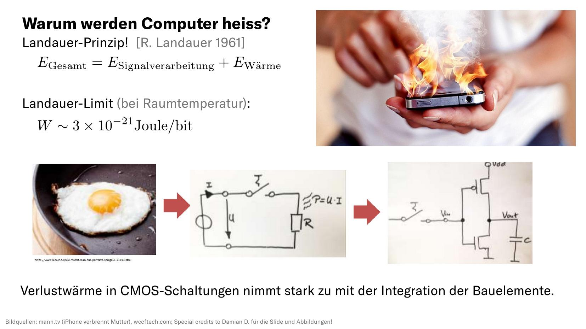
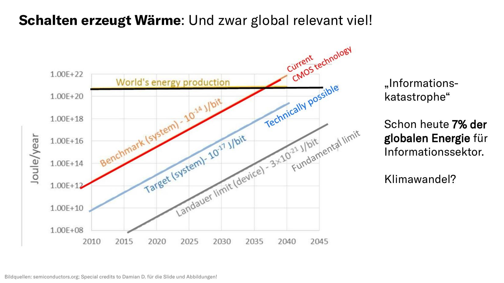
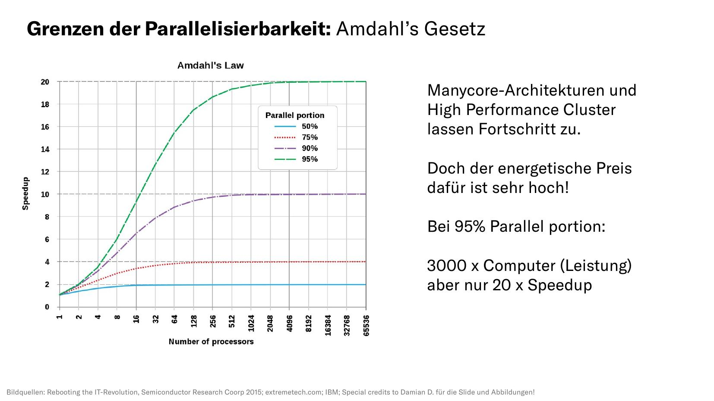
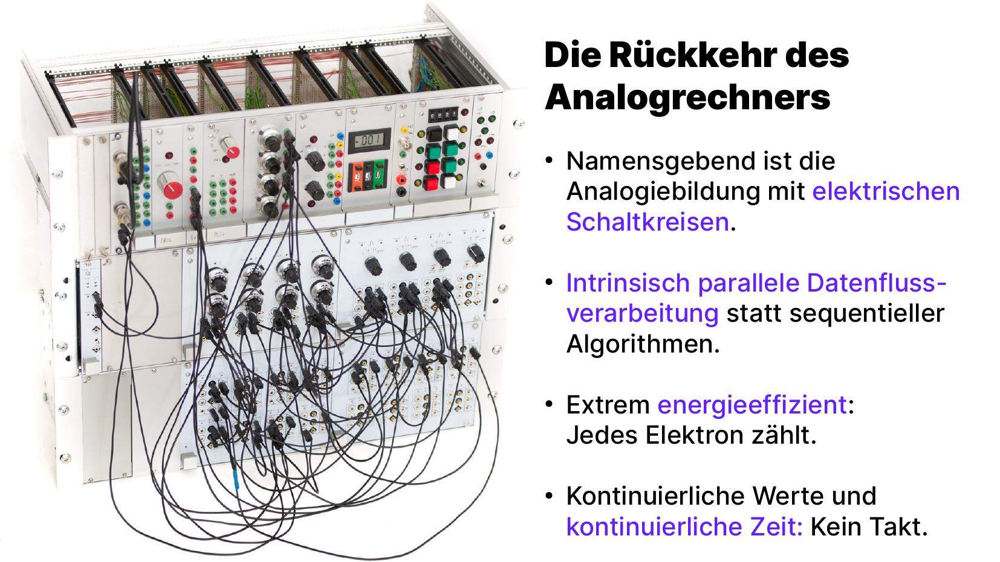

Der folgende Vortrag wurde von Sven Köppel am 18.06.2021 gegen 19 Uhr auf der Night Of Science in Frankfurt gehalten. Youtube-Aufzeichnung, PDF und ODT sind verfügbar.
Mein Name ist Sven Köppel und ich freue mich, heute hier in Frankfurt auf der Night Of Science eingeladen zu sein. Ich habe vor ein paar Jahren hier in theoretischer Physik promoviert.
Viele von euch fragen sich vielleicht, was so ein theoretischer Physiker (oder Physikerin) eigentlich den ganzen Tag lang macht. Wir untersuchen spannende naturwissenschaftliche Phänomene wie schwarze Löcher oder Strömungsmechanik, bei uns gibt es viele Differentialgleichungen. Teilchenkollisionen beschreiben wir in lustigen Diagrammen, die man Feynman-Diagramme nennt, und viele haben wahrscheinlich auch schon mal von den Theorien oder Gleichungen der Quantenmechanik oder Einsteins Feldgleichungen (allgemeine Relativitätstheorie) gehört.

Theoretische Physik besteht zum einen aus Theoriefindung und dem Aufstellen von mathematischen Modellen, aber als Motivation letztlich, quantiative Vorhersagen machen zu können, die dann oft in Zeichnungen, Plots oder dreidimensionalen Visualisierungen kommuniziert werden. Da die Gleichungen häufig kompliziert sind (so kompliziert, dass es zur Arbeit von theoretischen Physikern gehört, ihren Inhalt und ihre Bedeutung ein Leben lang zu diskutieren), muss häufig zu Annäherungen (Approximationen) gegriffen werden. Solche Vereinfachungen sind auch in der Regel nötig, um Gleichungen mit Hilfsmitteln wie Computern lösen zu können.
Computational Physics ist der Bereich in der Physik, der sich vor allem mit der der quantiativen Lösung von Gleichungen beschäftigt. Hier habe ich einmal das Hello World vom Lösen von Differentialgleichungen auf Digitalrechnern skizziert. Solche Gleichungen kennen alle, die mal klassische Mechanik gemacht haben, es könnten zum Beispiel Bewegungsgleichungen sein. Die Physik ist dann in der Funktion f auf der rechten Seite der Gleichung implementiert. Auf der linken Seite steht die Ableitung einer Funktion y(t), die gesucht wird. Die Lösung dieser Gleichung ist also nicht etwa eine Variable x, sondern eine Funktion y(t) über eine Zeit. Wir nennen solche Probleme in der Physik Anfangswertprobleme und es gibt eine reichhaltige Theorie über deren Eigenschaften.
Um eine solche Gleichung auf dem Computer zu lösen, muss sie erst einmal in geeigneter Form umgeschrieben werden. Dann kommt der wichtigste und mental komplizierteste Schritt, und zwar die Diskretisierung. Ein Digitalrechner arbeitet mit Ziffern und Zahlen, deswegen müssen alle Informationen die er verarbeitet diskret sein. Das Kontinuumsproblem wird in diesem Schritt also diskret approximiert.
Im nächsten Schritt wird das nun diskrete Problem in einer geeigneten Programmiersprache niedergeschrieben, Physiker(innen) verwenden hier gerne maschinennahe Sprachen wie die Programmiersprache C. Das wird dann kompiliert, also in Maschinensprache übersetzt, wie man unten links sieht. Spätestens hier wird ersichtlich: Die digitale Registermaschine arbeitet serielle Befehl für Befehl von oben nach unten ab.
Das lässt man dann laufen und macht die Auswertung, etwa die Darstellung der erlangten Daten. Während der/die Professor(in) gerne möchte, dass man die meiste Zeit auf Schritt (6) aufwendet, geht für viele Studierende die meiste Zeit auf Schritte (4) und (5) drauf. Letztendlich muss man viele Programme sehr häufig laufen lassen, und dann fängt es an kniffelig zu werden, das Gerät wird heiß, der Laptop reicht nicht mehr.
Aber warum passiert das überhaupt? Warum werden Laptop oder Smartphones bemerkbar warm, wenn man sie arbeiten lässt? Als Grundlagenforscher hab ich dafür natürlich eine eher theoretische Antwort: Schon 1961 fand Herr Landauer ein Prinzip, welches Informationstheorie mit Größen aus der statistischen Physik verheiratete. Er fand ein unteres Limit, wie viele Energie nötig ist, um ein einziges Bit zu verarbeiten. Es sind unvorstellbar kleine Zehn hoch minus 21 Joule, also eigentlich nichts, worüber wir uns Sorgen machen sollten, oder?
Tatsächlich verarbeiten wir ja sehr viele Bits in unseren Geräten, und die sind auch weit davon entfernt ideal zu sein. In unseren Computerchips (die auf sogenannter CMOS-Technologie basieren) entsteht Abwärme vor allem bei unperfekten Bausteinen, wo Leckströme fließen, die ohmsche Widerstände darstellen. Wer sich für dieses Detail interessiert, der kann einmal den Begriff der parasitärem Kapazitäten googlen.
Schalten erzeugt Wärme, und das bereits auf Skalen die global relvant werden. Schon heute werden 7% der globalen Energie für den Informationssektor aufgewendet, das ist vergleichbar mit dem CO2-Ausstoß der globalen Luftfahrt. Wir leisten hier also nicht nur einen signifikanten Beitrag zum Klimawandel, sondern laufen vor allem in eine Informationskatastrophe hinein, die bei weiterhin exponentiell steigender Menge an Datenverarbeitung in unserer Informationsgesellschaft überraschend bald die planetaren Ressourcen auffrisst. Und auch bessere Techniken nahe am Landauer-Limit können uns eigentlich nur ein paar Jahre retten. Was eigentlich kommen muss, ist effizientere Verarbeitung von weniger Informationen. Das klingt paradox und der Digitalisierung entgegengerichtet, ist aber mit Blick auf das menschliche Gehirn einleuchtend, wie wir gleich sehen werden.
Zunächst aber einmal weitere Kennzahlen aus der Chipindustrie. Viele kennen ja Moore's Law, das uns eine stetige Verdopplung der Transistoren auf gleicher Chipfläche vorhersagt. Wie wir links sehen, ist das seit fünfzig Jahren eine korrekte Vorhersage. Trotzdem stagniert die Geschwindigkeit von Computern seit ca. 10 Jahren (blaue Kurve). Das ist damit korreliert, dass die Frequenz von Computerchips sich seit fast 20 Jahren nicht mehr signifikant erhöht hat (grüne Kurve). Das wiederum liegt daran, dass der mit steigender Frequenz steigende Energiebedarf von Mikrochips (rot) nicht mehr abgeführt werden kann. Wir erreichen auf Mikrochips Temperaturen, die der Oberflächentemperatur der Sonne ähneln.

Immer schneller, immer kleiner, immer besser: Das versprechen moderne Halbleiterfertigungsprozesse. Doch die Art von Computerchips, die entstehen, haben eigentlich keine Zukunft. Wir bauen (rechte Grafik) immer kleinere, immer heißere und immer energieaufwändigere Rechner. Ein Blick in unsere Köpfe zeigt uns aber eigentlich, wo die Reise hingehen müsste: Zu den kalten, komplizierten Computern, unserem menschlichen Gehirn etwa. Es verbraucht nur etwa 20 Watt, hat aber mehr Leistung als der größte Supercomputer.
Solche Supercomputer stehen auch hier in Frankfurt bei der Goethe-Universität. Wäre heute eine normale Night Of Science und nicht eine Zoom-Home Office-Konferenz, dann würde es Pendelbusse zum nahe gelegenen Industriepark Höchst geben, wo seit mehr als zehn Jahren ein mit Mainwasser gekühlter Supercomputer steht. Er ist ein sogenannter Cluster, der aus über 600 Einzelcomputern besteht. Auf solchen Computern werden heute wissenschaftliche Fortschritte gemacht, massiv parallel.
Wem das nicht reicht, der findet in der deutschen Forschungslandschaft die drei Supercomputer des Gauss Centers for Supercomputing. Sie sind derart groß, dass für sie eigene Gebäude gebaut wurden. Dieser Cluster besteht aus über 3000 Einzelcomputern. Während meiner Promotion haben wir dort in München mit die größten Rechnungen der Welt gemacht. Problem gelöst?
Mitnichten. Einfach viele schwache Computer nebeneinander stellen erzeugt am Ende des Tages mehr Probleme, als es löst. Schuld sind die seriellen Teile des Programmes, die sich nicht parallelisieren lassen. Das kann man auch quantiativ beschreiben, z.B. mit Amdahl's Gesetz. Ein naiv parallelisiertes Problem kann so auf einem dreitausend (3000) mal größeren Computer einen lächerlichen Speedup von Faktor zwanzig (20) hinbekommen. Natürlich ist die Realität etwas komplizierter, die Probleme werden letztlich für den großen Rechner angepasst. Doch trotzdem kommt man mit der digitalen Rechentechnik hier nicht groß weiter. Es bleibt nur die Option, noch größere Computer mit noch mehr Stromverbrauch hinzustellen.
Kommen wir nun also zu neuer Grundlagenforschung im Bereich des Computerbaus. Wo geht die Reise hin? Ab hier dominieren exotische Techniken das Feld, was durch pinke Einhörner angedeutet ist.
Unter dem Schlagwort Exotic Computing verbuche ich eine ganze Menge Rechnertechniken, an denen aktuell geforscht wird. Dazu gehören nicht nur die berühmten Quantencomputer, sondern auch neuromorphe Rechnerarchitekturen, generelle Maschinen jenseits des Von Neumann-Bottlenecks und auch eine mysteriöse Technologie, die Analogrechner, über die ich im folgenden genauer sprechen werde.
Beeindruckend an diesen neuen Technologien ist, dass sie alle miteinander zu tun haben. Es gibt häufig Überlapps, sich gegenseitig befruchtende Forschungsfelder und damit letztlich keine Konkurrenz, sondern eine gemeinsame Bestrebung danach, eine Computerplattform der Zukunft zu finden.
Ich spreche heute über Analogrechner. Diese Rechner sind derart ungewöhnlich für das heutige Publikum, dass ich erst einmal kurz erläutern muss, was es mit einem solchen Rechner auf sich hat. Namensgebend ist zunächst die Analogiebildung zwischen einem zu lösenden Problem und den elektrischen Schaltkreisen, die dem Analogrechner zur Verfügung stehen. Diese arbeiten intrinsisch parallel und arbeiten keine sequentiellen Algorithmen ab. Die fließenden Ströme rechnen, das macht ihn sehr energieeffizient. Statt Bits und einem Takt gibt es eine kontinuierliche Werte- und Zeitdarstellung.
Woraus besteht nun ein Analogrechner? Claude Shannon hat schon vor 80 Jahren den General Purpose Analog Computer theoretisch und umfassend aus vier Bauelementen beschrieben. Zu diesen gehört etwa ein Baustein, der kontinuierlich zwei Eingangsgrößen miteinander multiplizieren kann. Diese Bausteine werden miteinander verdrahtet, ähnlich wie es mit Logikgatter bei Digitalrechnern gemacht wird. So entsteht ein Rechenprogramm, welches ohne Algorithmus und ohne Speicher ständig und gleichzeitig rechnet.

Hier einmal ein Bild aus historischen Kontext: Einen Digitalcomputer kann man sich vorstellen wie eine einzige Person, die sehr zuverlässig, gut bezahlt und außergewöhnlich schnell nacheinander Rechnungen ausführt. Einen Analogcomputer kann man sich hingegen vorstellen wie ein Team von Personen, die jeweils spezialisiert auf ihre Grundrechenart sind und sich ständig die Ergebnisse zuschieben.
Natürlich haben Analogrechner auch Nachteile. Zunächst ist die Ungenauigkeit zu nennen, die bauteilbedingt bei ca. 3-4 Dezimalstellen liegt. Es gibt aber viele Anwendungen, wo das kein Problem darstellt. Vom Zugang ist zu sagen, dass die Rechnung selber zur Messoperation, ähnlich wie bei Quantencomputern, wird. Messen kann man aber überall und ohne dabei die Rechnung zu stören. Im Bild hier ist ein moderner Analogrechner mit digitaler Messapperatur gezeigt, gemessen wird einfach ständig während der Rechner rechnet.
Ein großes Problem ist die Zahlenskalierung: Da mit elektrischen Größen gerechnet wird, können die nicht beliebig groß werden. Das kann man sich leicht veranschaulichen: Wenn ein Strom eine Größe kodiert, dann kann sie nicht viele Megaampere betragen, das könnte ja kein Kraftwerk mehr leisten wenn der Analogrechner so wie im Bild hier in einer Wohnung steht.
Wie sieht ein Analogrechnerprogramm aus? Kernpunkt der Arbeit ist es, für eine mathematische Gleichung eine elektrische Ersatzschaltung zu finden. Sobald man den Analogrechner anschaltet, liegt sofort das richtige Ergebnis an. Man muss nicht warten, bis ein Algorithmus erste Zahlen liefert.
Ganz konkret würde ein Hello World-Workflow des Analogrechnens also auch wieder zunächst eine Umformung der Gleichungen in geeigneter Form voraussetzen. Dann entwickelt man aber die Ersatzschaltung, die sich in der Regel leicht von der mathematischen Gleichung ablesen lässt. Diese wird in einem moderenen Analogrechner programmiert, also in einer geeigneten Hardwarebeschreibungssprache niedergeschrieben. Das Laufen uns Auswerten lassen führt dann zum Ergebnis.
Insgesamt kommen auf den Schritten (3) bis (5) viele Fragestellungen auf, die wir derzeit in unseren Forschungsbemühungen angehen, da wir moderne Hybridrechner bauen wollen, die sich aus analogen und digitalen Komponenten zusammensetzen.

Dies steht im Kontrast zu historischen Analogrechnern, die meist riesige Schränke voll mit Kabeln waren. In modernen Analogrechnern wollen wir keine Kabel mehr mit der Hand verdrahten, sondern diese Aufgabe einen Digitalrechner übernehmen lassen.
Unsere Vision ist dabei, dass wir solche schrankgroßen Analogrechner in wenigen Jahren auf einen Mikrochip verkleinern wollen. So sollen viele versäumte Jahrzehnte der Analogrechnerintegration aufgeholt werden.
Wofür ist das ganze gut?
Ein Anwendungsgebiet, welches ich vorhin ja schon angeschnitten habe, ist das neuromorphe Rechnen und die künstliche Intelligenz im Allgemeinen. Hier ist anzumerken, dass sich Neuronen sehr gut mit Analogrechnern simulieren lassen, da es viele Ähnlichkeiten gibt bzgl. Informationskodiernug, Genauigkeit, Zeitkontinuierlichkeit und Verdrahtung.
Das Quantencomputing ist eine ebenfalls bereits erwähnte Technologie, die sehr interessant ist aber, selbst wenn umsetzbar, auf Dauer viel Energie zur Kühlung benötigen wird. Mit Analogrechnern können wir Quantensimulation wahrscheinlich sehr viel effizienter machen. Das Stichwort Simulated Annealing ist dafür relevant.
Für Freunde der theoretischen Informatik sei hier kurz ein Ausblick in die Komplexitätstheorie gegeben: Es gibt sogar Vermutungen, dass klassische Analogrechner einer anderen Komplexitätsklasse angehören als klassische Digitalrechner. Die Arbeiten von Hava Siegelmann seien hier empfohlen.
Zuguterletzt möchte ich aber auch weltliche Themen jenseits der Grundlagenforschung erwähnen. Mit Analogrechnern werden sich handfeste Geräte bauen lassen, gerne genannt an der Stelle etwa Wearables oder Implantate.
Da ich immer von wir sprach, wer sind wir eigentlich? Nun, zunächst ist da Professor Ulmann der schon seit mehr als zehn Jahren einen modernen Analogrechner baut und erfolgreich vertreibt. Dieser Analogrechner ist aber schrankgroß und alleine vom Materialwert sehr teuer.
Deswegen haben wir vor, dieses Jahr einen erschwinglichen kleinen Analogrechner zu Ausbildungszwecken zu vertreiben, den wir the analog thing nennen.
Unser Kernziel ist es für die nächsten Jahre aber, einen der ersten universell einsetzbaren Analogrechnerchips der Welt zu bauen. Wir hoffen, dass wir dies in Kooperation mit öffentlichen Forschungspartnern sowohl hier am Standort Frankfurt als zum Beispiel auch auf dem Campus der großen neuen Quantencomputinginitiative des deutschen Zentrums für Luft- und Raumfahrt in Ulm machen können.
Falls euch diese Themen interessieren, dann seid ihr herzlich eingeladen, auf unseren Websites vorbeizuschauen oder mir eine E-Mail zu schreiben. Wir sind immer auf der Suche nach Studierenden und können zahlreiche Abschlussarbeiten anbieten.
Ich bedanke mich für eure Aufmerksamkeit und würde mich freuen, bei einer zukünftigen Night of Science auch einmal in echt auf dem Universitätscampus Frankfurt-Riedberg zu erscheinen.